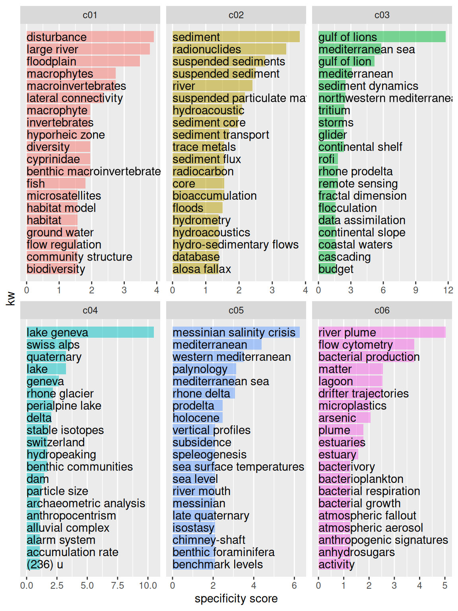

Code
# Chargement des packages et des données
library(tidyverse)
library(bibliometrix)
library(ggraph)
library(tidygraph)
library(tidytext)
library(mixr)
set.seed(123)# Chargement des packages et des données
library(tidyverse)
library(bibliometrix)
library(ggraph)
library(tidygraph)
library(tidytext)
library(mixr)
set.seed(123)file <- "data/savedrecs.bib"
if(!file.exists("data/data_trans/M.RDS")){
M <- convert2df(file = file,
dbsource = "isi",
format = "bibtex")
saveRDS(M,"data/data_trans/M.RDS")
}
if(!file.exists("data/data_trans/results.RDS")){
results <- biblioAnalysis(M, sep = ";")
saveRDS(results,"data/data_trans/results.RDS")
}
M=readRDS("data/data_trans/M.RDS")
results=readRDS("data/data_trans/results.RDS")if(!file.exists("data/data_trans/tib_doc.RDS")){
tib_doc=M %>%
rownames_to_column(var="id_doc") %>%
as_tibble()
saveRDS(tib_doc,"data/data_trans/tib_doc.RDS")
}
tib_doc=readRDS("data/data_trans/tib_doc.RDS")if(!file.exists("data/data_trans/tib_auteur.RDS")){
tib_auteur=tib_doc %>%
group_by(id_doc) %>%
nest() %>%
mutate(data=purrr::map(data,
~mutate(.x,
AU=str_split(AU,";")))) %>%
mutate(data=purrr::map(data,
~unnest(.x, cols=c("AU")))) %>%
unnest(cols="data") %>%
mutate(AU_rank=1:n()) %>%
ungroup()
saveRDS(tib_auteur,"data/data_trans/tib_auteur.RDS")
}
tib_auteur=readRDS("data/data_trans/tib_auteur.RDS")if(!file.exists("data/data_trans/tib_motscles.RDS")){
tib_motscles= tib_doc %>%
group_by(id_doc) %>%
nest() %>%
mutate(data=purrr::map(data,
~mutate(.x,DE=str_split(DE,";")))) %>%
mutate(data=purrr::map(data,
~unnest(.x, cols="DE"))) %>%
unnest(cols="data") %>%
ungroup()
saveRDS(tib_motscles,"data/data_trans/tib_motscles.RDS")
}
tib_motscles=readRDS("data/data_trans/tib_motscles.RDS")if(!file.exists("data/data_trans/aut_loc.RDS")){
LCR=localCitations(M)
#LCR$Authors$Author liste des auteurs cités dans le champ M$CR
#Combien de fois chacun de ces auteurs apparaît dans M$CR?
#Attention ce résultat ne correspond pas à celui renvoyé par localCitations() voir objet LCR
aut_loc=LCR$Authors %>%
as_tibble() %>%
select(Author) %>%
filter(!(Author %in% c("DE","LE","VAN","[ANONYMOUS] A"))) %>%
mutate(ncit_loc=purrr::map_int(Author, ~length(which(str_detect(M$CR,.x)))))
saveRDS(aut_loc,"data/data_trans/aut_loc.RDS")
}if(!file.exists("data/data_trans/auteurs.csv")){
aut_loc=readRDS("data/data_trans/aut_loc.RDS")
auteurs=tib_auteur %>%
group_by(AU) %>%
mutate(ndoc=n(),
ncit=sum(TC)) %>%
summarise(ndoc=unique(ndoc),
ncit=unique(ncit),
ndoc_1st=sum(AU_rank==1),
ncit_1st=sum(TC[which(AU_rank==1)])) %>%
ungroup() %>%
left_join(aut_loc,by=c("AU"="Author")) %>%
arrange(desc(ndoc))
write_csv2(auteurs, "data/data_trans/auteurs.csv")
}
auteurs=read_csv2("data/data_trans/auteurs.csv")
reactable::reactable(auteurs,
filterable=TRUE)if(!file.exists("data/data_trans/sources.csv")){
sources=tib_doc %>%
group_by(SO) %>%
summarise(ndoc=n(),
ncit=sum(TC)) %>%
arrange(desc(ndoc))
write_csv2(sources,"data/data_trans/sources.csv")
}
sources=read_csv2("data/data_trans/sources.csv")
reactable::reactable(sources,
filterable=TRUE)Les articles du corpus font référence à des documents locaux (du corpus) ou externes.
Attention Une partie (minime: ~0.7%) de ces références est mal renseignée par WOS. Celles qui sont correctement renseignées de manière correcte le sont de telle sorte qu’il est difficile de faire une jointure pour retrouver les références locales.
cit=citations(M)
cit$Cited %>% as_tibble %>%
summarise(nref=sum(n),
nref_distinctes=n(),
nref_pb=length(which(str_detect(CR,"ANONYMOUS"))))# A tibble: 1 × 3
nref nref_distinctes nref_pb
<int> <int> <int>
1 101397 67623 736Top 100 des articles les plus cités par le corpus:
citations=cit$Cited %>%
as_tibble() %>%
filter(!str_detect(CR,"ANONYMOUS"))
reactable::reactable(citations %>% head(100),
filterable=TRUE)bibliometrix comprend des fonctions permettant d’extraire automatiquement les éléments d’affiliation distincts et les références mais ça fonctionne moyen (de fait il est déjà assez difficile d’en faire sens au niveau de l’export WOS…)
aff=results$Affiliations %>%
as_tibble() %>%
head(n=50)
reactable::reactable(aff)Il est ainsi assez difficile de travailler sur les affiliations de manière “non dirigée”… Par exemple pour les publis Hervé et en filtrant pour garder les publis récentes (>2005) on a déjà 34 affiliations formulées de manière différentes (tout est mélangé pour les différents auteurs des articles) et en fonction du champ l’info principale n’est pas toujours la même (ici pas de mention de EVS par ex.).
Par contre on pourrait imaginer lister un certain nombre de structures (CNRS, EVS, LBBE, LEHNA, etc) et tenter de détecter à partir de cet ensemble quels auteurs/publis s’y rattachent…
Des infos sont enregistrées dans la base de données WOS concernant les programmes de recherche et les sources de financement. On peut récupérer ces renseignements pour environ un tiers des documents. Si on veut s’en servir il y aura un peu de nettoyage à faire…
if(!file.exists("data/data_trans/bibtib.RDS")){
bib=bibtex::read.bib("data/savedrecs.bib")
bibtib=tibble(WOS_ID=names(bib),
funding_text=NA,
funding_acknowledgement=NA)
for(i in 1:length(bib)){
biblist=unlist(bib[i])
var_text=paste0(bibtib$WOS_ID[i],".funding-text")
var_ackn=paste0(bibtib$WOS_ID[i],".funding-acknowledgement")
if(var_text %in% names(biblist)){
bibtib$funding_text[i]=biblist[[var_text]]
}else{
bibtib$funding_text[i]=NA
}
if(var_ackn %in% names(biblist)){
bibtib$funding_acknowledgement[i]=biblist[[var_ackn]]
}else{
bibtib$funding_acknowledgement[i]=NA
}
}
bibtib =bibtib %>%
mutate(funding_text=str_replace_all(funding_text,"\\{\\[\\}","[")) %>%
mutate(funding_acknowledgement=str_replace_all(funding_acknowledgement,"\\{\\[\\}","["))%>%
mutate(funding_text=str_replace_all(funding_text,"``|\\{''\\}|\\n","")) %>%
mutate(funding_acknowledgement=str_replace_all(funding_acknowledgement,"``|\\{''\\}|\\n",""))%>%
mutate(funding_text=str_replace_all(funding_text,"\\s+"," ")) %>%
mutate(funding_acknowledgement=str_replace_all(funding_acknowledgement,"\\s+"," "))
saveRDS(bibtib,"data/data_trans/bibtib.RDS")
}
bibtib=readRDS("data/data_trans/bibtib.RDS")financeurs=bibtib %>%
filter(!is.na(funding_acknowledgement)) %>%
group_by(funding_acknowledgement) %>%
summarise(ndoc=n()) %>%
arrange(desc(ndoc))
reactable::reactable(financeurs,
filterable=TRUE)financeurs %>%
mutate(ZABR=str_detect(funding_acknowledgement,
"ZABR|Zone Atelier Bassin du Rh.ne|GRAIE|OHM|OSR")) %>%
group_by(ZABR) %>%
summarise(n=n())# A tibble: 2 × 2
ZABR n
<lgl> <int>
1 FALSE 624
2 TRUE 34ggplot(tib_doc,
aes(x=PY))+
geom_bar()+
xlab("année de publication")+ylab("nombre de publications")
topAU <- authorProdOverTime(M, k = 20, graph = TRUE)
Quels sont les documents qui font mention des termes SOCIAL/SOCIETY/SOCIO-quelque-chose dans leur abstract?
tib_doc_SHS=tib_doc %>%
mutate(mention_SHS=str_detect(AB,"SOCIAL|SOCIETY|SOCIO"))
id_SHS=tib_doc_SHS %>%
filter(mention_SHS) %>%
pull(id_doc)
prop_SHS=tib_doc_SHS %>%
group_by(mention_SHS) %>%
summarise(n=n())
prop_SHS# A tibble: 3 × 2
mention_SHS n
<lgl> <int>
1 FALSE 1694
2 TRUE 63
3 NA 93=> Peu de documents étiquetés “SHS” a priori (3.59% des documents pour lesquels on dispose de l’abstract) mais ce premier ensemble va nous permettre de rechercher les termes spécifiques aux SHS et d’identifier un “courant SHS” plus important et transverse (cf partie Section 3.1)
biblioNetwork() a deux arguments principaux
On définit des communautés d’auteurs en se basant sur les collaborations (co-signature de documents).
nw_coll_auth <- biblioNetwork(M,
analysis = "collaboration",
network = "authors",
sep = ";")
auteurs_5docmin=auteurs %>%
filter(ndoc>=5) %>%
pull(AU)
ind=which(colnames(nw_coll_auth) %in% auteurs_5docmin)
nw_coll_auth=nw_coll_auth[ind,ind]set.seed(1234)
p=networkPlot(nw_coll_auth,
Title = "Collaborations",
type = "fruchterman",
cluster="louvain",
size=5,
size.cex=T,
labelsize=0.5,
label.n=30,
label.cex=F,
alpha=0.5,
remove.isolates=TRUE,
edges.min=1,
verbose=FALSE)
auteurs=auteurs %>% mutate(au=tolower(AU))
tidyg=as_tbl_graph(p$graph) %>%
activate(nodes) %>%
left_join(auteurs,
by=c("name"="au")) %>%
mutate(keep=ndoc>15) %>%
mutate(showname=case_when(keep~name,
!keep~NA_character_)) %>%
mutate(community=paste0("cl",str_pad(community,2,pad="0")))
ggraph(tidyg,layout="fr")+
geom_edge_link(color="light grey")+
geom_node_point(aes(color=community,size=ndoc))+
geom_node_text(aes(label=showname))
#
# p=ggraph(tidyg,layout="auto")+
# geom_edge_link(color="light grey")+
# geom_node_point(aes(color=factor(community),size=deg,label=name))
# plotly::ggplotly(p)auteurs_graph=tidyg %>% activate(nodes) %>% as_tibble() %>%
select(au=name,AU,deg,community,ndoc,ncit,ndoc_1st,ncit_1st,ncit_loc) %>%
left_join(p$cluster_res,by=c("au"="vertex"))
ndoc_auteurs_graph=tib_auteur %>%
filter(AU %in% auteurs_graph$AU) %>%
select(id_doc) %>%
unique() %>%
nrow()Ce graphe représente les collaborations des 232 auteurs qui en comptent le plus dans le corpus (et qui sont chacun k-ième auteur de 5 documents minimum, ce filtre servant à écarter les auteurs de documents comptant de très nombreux auteurs -ce qui augmente artificiellement le degré du noeud-auteur dans le graphe).
Ces 232 auteurs représentent 5.2% des auteurs du corpus, mais 55% des documents du corpus ont au moins un de ces auteurs comme n-ième auteur.
reactable::reactable(auteurs_graph,groupBy="community",sortable=TRUE,filterable=TRUE)Quand cela est possible et en se basant sur la communauté dont fait partie ses auteurs, chaque document du corpus est lui-même rattaché à une communauté.
On utilise pour cela la communauté dont les auteurs du document font majoritairement partie, en appliquant une pondération selon le rang de l’auteur.
On attribue au \(k\)-ième auteur d’un document qui en compte \(n\) en tout un poids \(w\) de
\[w=(n-k+1)\frac{2}{n(n+1)}\] soit par exemple pour un document qui compte 4 auteurs des poids de 0.4,0.3,0.2 et 0.1 pour le premier, deuxième, troisième et quatrième auteur respectivement.
Dans le cas où la majorité des auteurs ne fait pas partie d’une communauté définie, on assigne le document à la communauté majoritaire (par exemple si 30% des auteurs font partie de la communauté Cl01 et 70% ne font pas partie d’une communauté définie on assigne le document à la communauté Cl01).
get_comm=function(dat){
res=dat %>%
na.omit()
if(nrow(res)>=1){
res=res %>%
filter(!is.na(community)) %>%
filter(weight==max(weight)) %>%
pull(community) %>%
.[1]
}else{res=NA}
return(res)
}
get_comm_mix=function(dat){
res=dat %>%
na.omit()
if(nrow(res)>=1){
res=res %>%
na.omit() %>%
pull(community) %>%
str_c(collapse="-")
}else{res=NA}
return(res)
}
docs_comm=tib_auteur %>%
select(id_doc,AU,AU_rank) %>%
group_by(id_doc) %>%
mutate(n=n()) %>%
mutate(weight=2*(n-AU_rank+1)/(n*(n+1))) %>%
ungroup() %>%
left_join(auteurs_graph %>% select(AU,deg,community)) %>%
group_by(id_doc,community) %>%
summarise(weight=sum(weight,na.rm=TRUE)) %>%
ungroup() %>%
group_by(id_doc) %>%
nest() %>%
mutate(community=purrr::map_chr(data,get_comm) ,
community_mix=purrr::map_chr(data,get_comm_mix)) %>%
select(community,community_mix)
docs_comm %>%
group_by(community) %>%
summarise(n=n())# A tibble: 13 × 2
community n
<chr> <int>
1 cl01 375
2 cl02 155
3 cl03 120
4 cl04 40
5 cl05 93
6 cl06 35
7 cl07 30
8 cl08 20
9 cl09 39
10 cl10 61
11 cl11 17
12 cl12 35
13 <NA> 830tib_doc=tib_doc %>%
left_join(docs_comm,by="id_doc")
show_tib_doc = tib_doc %>%
arrange(desc(TC)) %>%
select(community,id_doc,AU,TC,PY,TI,SO)
reactable::reactable(show_tib_doc,
filterable=TRUE)tib_doc_PY=tib_doc %>%
group_by(PY) %>%
mutate(ntot=n()) %>%
ungroup() %>%
filter(!is.na(community),PY>1988) %>%
group_by(community,PY,ntot) %>%
summarise(n=n()) %>%
ungroup() %>%
mutate(prop=n/ntot)
ggplot(tib_doc_PY,aes(x=PY,y=n))+
geom_col(aes(fill=community))+
facet_grid(rows=vars(community))
kw_communities=tib_doc%>%
#unnest_tokens(output="kw",input="DE",token=stringr::str_split, pattern = "; ") %>%
unnest_tokens(output="kw",input="AB",token="words") %>%
mutate(community=as.factor(community))
spec_com=tidy_specificities(kw_communities,cat1=kw,cat2=community,top_spec=10) %>%
arrange(community,desc(spec))
plot_specificities(spec_com,kw,community)
nw_cooc_kw <- biblioNetwork(M,
analysis = "co-occurrences",
network = "keywords",
sep = ";")
netstat <- networkStat(nw_cooc_kw)p=networkPlot(nw_cooc_kw,
weighted=T, n = 150,
Title = "Co-occurence des mots-clés",
type = "fruchterman",
cluster="louvain",
size=T,
edgesize = 5,
labelsize=0.7)
M=M %>%
mutate(CR=str_replace(CR,"ANONYMOUS.*;","")) %>%
mutate(CR=str_replace(CR,"NO TITLE CAPTURED",""))
nw_cocit_doc <- biblioNetwork(M,
analysis = "co-citation",
network = "references",
sep = ";")
p=networkPlot(nw_cocit_doc,
n = 150,
Title = "Co-Citation Network",
type = "auto",
size=T,
cluster="louvain",
remove.multiple=FALSE,
labelsize=0.7,
edgesize = 5,
label.n=30)
CS <- conceptualStructure(M,
field="ID",
method="MCA",
minDegree=10,
clust=8,
stemming=FALSE,
labelsize=10,
documents=3,
graph=FALSE)
CS$graph_terms
CS$graph_dendrogramNULL### Mise en forme de la base
tib_doc_light=tib_doc %>%
select(id_doc,TI,AU,SO,DT,DE,TC,PY,AB)
if(!file.exists("data/data_trans/tib_lemma_cl.RDS")){
### Tokenisation, lemmatisation:
tib_lemma=tib_doc_light %>%
unnest_tokens(word,AB,token="words")
lex_en=mixr::get_lexicon("en")
tib_lemma_cl=left_join(tib_lemma, lex_en,by="word") %>%
filter(type %in% c("nom","ver","adj"))
saveRDS(tib_lemma_cl,"data/data_trans/tib_lemma_cl.RDS")
}
tib_lemma_cl=readRDS("data/data_trans/tib_lemma_cl.RDS")
if(!file.exists("data/data_trans/tib_sparse.RDS")){
### mise en forme pour STM
tib_sparse=tib_lemma_cl %>%
group_by(lemma) %>% # compte pour chaque lemme...
mutate(n=n()) %>% # ...son nombre d'occurrences puis
filter(n>20) %>% # retire ceux représentés moins de 20 fois dans le corpus
ungroup() %>%
cast_sparse(row=TI, column=lemma, value=n)
saveRDS(tib_sparse,"data/data_trans/tib_sparse.RDS")
}
tib_sparse=readRDS("data/data_trans/tib_sparse.RDS")Voici les termes les plus spécifiques des abstracts contenant “SOCIETY/SOCIAL/SOCIO”:
library(mixr)
tib_lemma_cl=tib_lemma_cl %>%
mutate(mention_SHS=as.factor(id_doc %in% id_SHS))
spec=tidy_specificities(tib_lemma_cl,
cat1=lemma,
cat2=mention_SHS,min_spec=5) %>%
filter(mention_SHS=="TRUE") %>%
select(-mention_SHS)
reactable::reactable(spec)On va retenir les termes qui permettent d’identifier une dimension SHS et qui n’ont pas a priori un sens autre dans un autre contexte (par ex. on écarte “MANAGEMENT”):
“RESTORATION”,“STAKEHOLDER”,“DISCOURSE”,“ONTOLOGY”,“PRACTITIONER”,“ACTOR”
Combien de documents mentionnent au moins un de ces termes dans leur abstract?
termes_SHS=c("RESTORATION","STAKEHOLDER","DISCOURSE","ONTOLOGY","PRACTITIONER","ACTOR")
tib_doc %>%
mutate(mention_restoration=str_detect(AB,str_c(termes_SHS,collapse="|"))) %>%
group_by(mention_restoration) %>%
summarise(n=n())# A tibble: 3 × 2
mention_restoration n
<lgl> <int>
1 FALSE 1348
2 TRUE 409
3 NA 93Quelles sont les communautés d’auteur dans lesquelles ces termes sont les plus pregnants?
termes_shs=tolower(termes_SHS)
kw_communities %>% mutate(shs=str_count(kw,str_c(termes_shs,collapse="|"))) %>%
group_by(community) %>%
summarise(ntot=n(),
nshs=sum(shs,na.rm=TRUE)) %>%
mutate(prop=nshs/ntot*100)# A tibble: 13 × 4
community ntot nshs prop
<fct> <int> <int> <dbl>
1 cl01 89538 318 0.355
2 cl02 44621 38 0.0852
3 cl03 28057 53 0.189
4 cl04 9221 12 0.130
5 cl05 21173 13 0.0614
6 cl06 8341 10 0.120
7 cl07 6530 2 0.0306
8 cl08 4860 2 0.0412
9 cl09 9419 7 0.0743
10 cl10 14130 17 0.120
11 cl11 3260 2 0.0613
12 cl12 5800 8 0.138
13 <NA> 189673 330 0.174 library(stm)
if(!file.exists("data/data_trans/topic_model.RDS")){
set.seed(123)
topic_model<-stm(tib_sparse,K=8, verbose=FALSE)
saveRDS(topic_model,"data/data_trans/topic_model.RDS")
}
topic_model=readRDS("data/data_trans/topic_model.RDS")thematiques=tidytext::tidy(topic_model, matrix="beta") %>%
group_by(topic) %>%
slice_max(beta,n=20) %>%
mutate(rank=row_number()) %>%
arrange(topic,desc(beta)) %>%
ungroup()ggplot(thematiques %>%
mutate(topic=as.factor(topic)) %>%
mutate(term=tidytext::reorder_within(term,by=beta,within=topic)),
aes(x=beta,y=term, fill=topic))+
geom_bar(stat="identity")+
facet_wrap(facets=vars(topic), scales="free")+
theme(legend.position="none")+
tidytext::scale_y_reordered()
thematiques=thematiques %>%
group_by(topic) %>%
nest()%>%
summarise(topic_terms=map(data, ~paste(.$term,collapse=", "))) %>%
unnest(cols=c(topic_terms)) %>%
mutate(topic_short=case_when(topic==1~"hydrologie",
topic==2~"transport sédimentaire",
topic==3~"modélisation",
topic==4~"écologie",
topic==5~"biochimie",
topic==6~"quantification",
topic==7~"changements,risques",
topic==8~"étude régionale"))tib_gamma <- tidy(topic_model, matrix = "gamma") %>%
arrange(document,desc(gamma))
tib_doc_th=tib_doc_light %>%
mutate(document=1:n()) %>%
left_join(tib_gamma,by="document") %>%
left_join(thematiques,by="topic")
ggplot(tib_doc_th%>%
group_by(PY,topic,topic_short) %>%
summarise(sgamma=sum(gamma),
n=n()) %>%
ungroup() %>%
mutate(sgamma=sgamma/n) %>%
na.omit(),
aes(x=PY,y=sgamma,col=topic_short))+
geom_smooth()
tib_auteur_th=tib_auteur %>%
left_join(tib_doc_th %>% select(id_doc,topic,gamma,topic_terms,topic_short),
by="id_doc") %>%
group_by(AU) %>%
mutate(ndoc=n()) %>%
ungroup() %>%
group_by(AU,topic,topic_short) %>%
summarise(s=sum(gamma),
ndoc=unique(ndoc)) %>%
mutate(s=s/ndoc) %>%
arrange(desc(ndoc)) %>%
ungroup() %>%
na.omit()
top_auteurs=tib_auteur_th %>% group_by(AU) %>% summarise(n=unique(ndoc)) %>% top_n(10) %>% pull(AU)
ggplot(tib_auteur_th %>% filter(AU %in% top_auteurs),
aes(x=topic_short,y=s,fill=factor(topic_short)))+
geom_col()+
facet_wrap(facets=vars(AU))+
coord_flip()